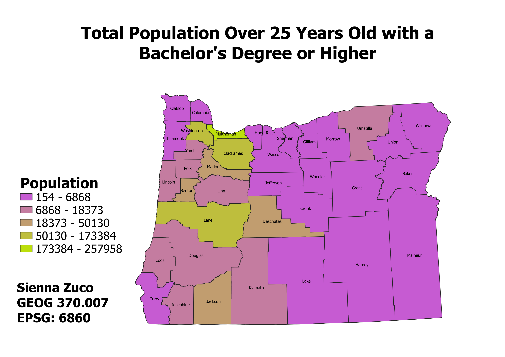

Homework 7: Census data choropleth
Sienna Zuco
This map displays the variation in education level attainment across Oregon. This data set looked specifically at the the total population of people over the age of 25 who had a Bachelor's degree or higher. Where counties are more purple, education levels are lower, whereas more green counties have higher education level attainment. As you can see, more people have a Bachelor's degree or higher in places where there are universities or cities. Fro example, education levels are higher in Washington, Clackamas, and Multnomah counties which include the city of Portland and its suburbs. Overall, this data was somewhat disappointing since education levels above high school remain fairly low across the state unless you are looking towards the coast.

Data used for this project
CSV dataset for Education Levels in Oregon Counties
Link to Oregon County Vectors as a geoJSON